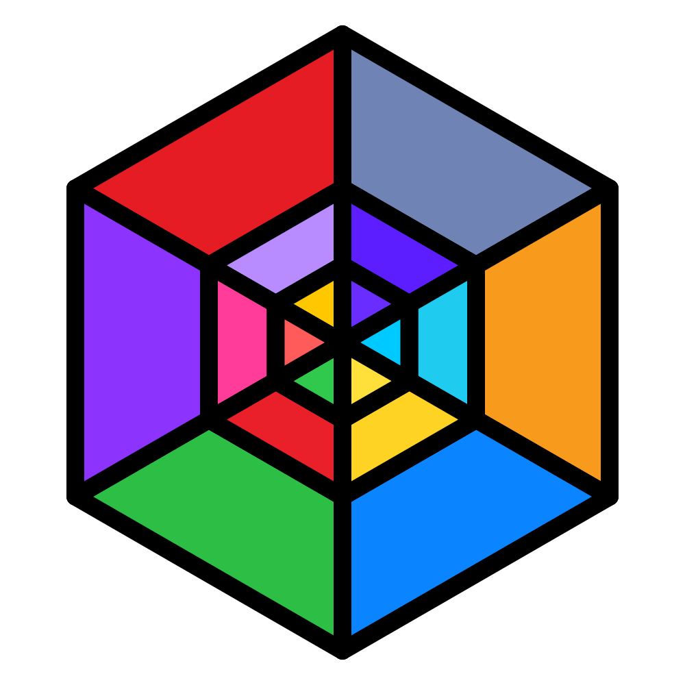

Systems
Explore the foundations that make software languages and platforms work.

LET'S CODE INDIAENGINEERING PLAYGROUNDINDEPENDENT ENGINEERING PLAYGROUND
Let-s-Code-India is a place for serious curiosity: a growing body of open work across systems, tools, intelligence, applications, and the spaces between them.
THE NORTH STAR
There are no fixed boundaries here. We study how things work, take them apart, and build new versions with the details still visible. The result is an open engineering playground where a small experiment can become a useful tool, a language, a platform, or a new way to think.
Open collaboration keeps the work honest. Every repository is an invitation to inspect, learn, improve, and carry an idea somewhere unexpected.
FOUR DIRECTIONS
The orbit labels are a map of the questions we like to follow.
Explore the foundations that make software languages and platforms work.
Build practical tools that make development and creative work more approachable.
Experiment with intelligent software and the ways people can work with it.
Bring ideas together in software people can run, inspect, and improve.
LIVE SURFACE
Published experiments and project homes, discovered directly from the organization.
OPEN WORK
Read the project notes, then follow the thread back to the source.
A LIVING CATALOG
The directory is generated from public organization data, with project notes loaded only when requested.
main and manual dispatch.data/repos.json.OPEN COLLABORATION
Useful changes can start with a clear question, a bug report, or a focused improvement.
Open an issue to discuss a problem or idea. For a concrete change, send a focused pull request to the website repository so it is straightforward to review.
For organization-wide expectations, read the contribution and conduct defaults. You can also explore and contribute to the organization's projects.
QUICK ANSWERS
An independent engineering playground for open work across systems, tools, intelligent software, and applications.
Yes. Open an issue or send a focused pull request, and follow the organization's contribution and conduct defaults.
A GitHub Actions workflow refreshes data/repos.json every six hours. The site reads that static catalog before using the public API fallback.
Use the private reporting instructions on the Security page. Do not post exploit details in a public issue.
The site currently identifies Ayush Giri as its maintainer.
COME BUILD WITH US
Browse a project, read its README, open an issue, or bring a new question to the organization. The map is deliberately unfinished.
Maintained by Ayush Giri ↗